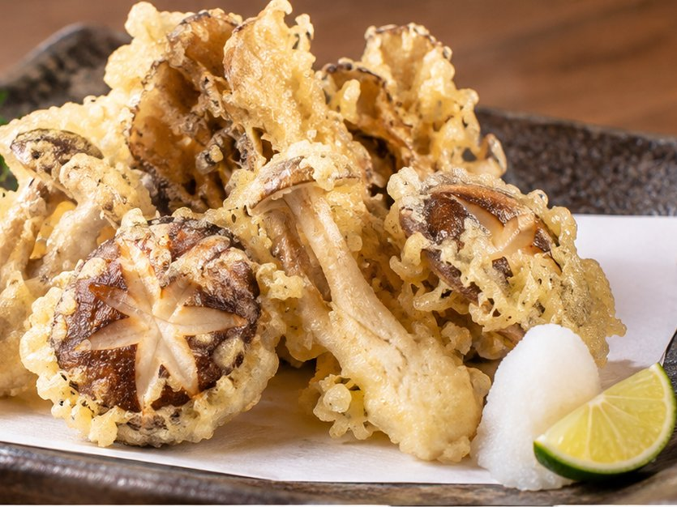
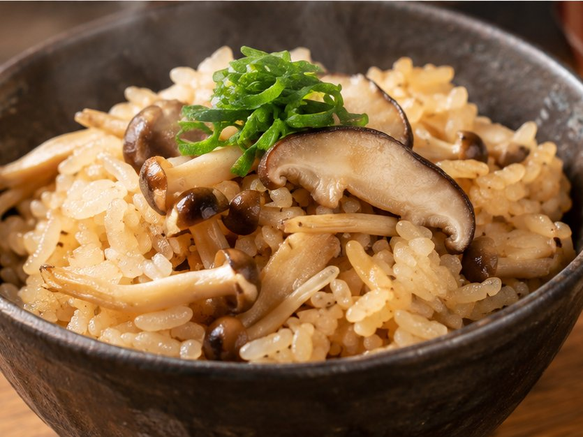

Photo
 其の一
其の一
其の一
秋刀魚の塩焼き
脂ののった旬の秋刀魚を、炭火でじっくりと焼き上げました。大根おろしとレモンを添えて。
¥1,080（税込）
酒肴灯ノ間
旬の魚と季節の肴、
そして日本酒の店。
Scroll
Concept
街の喧騒から一歩入ると、
灯りをひとつ落とした、静かな空間。
その日に仕入れた旬の魚と季節の野菜を、
炭火と出汁で、ていねいに仕立てます。
カウンター八席と、個室が二つ。
一献を傾けながら、ゆっくりと夜をお過ごしください。
市場から届く魚と季節の野菜。その日いちばんの素材で献立を組みます。
香ばしさは炭火で、やさしさは出汁で。素材の持ち味を引き出す二つの技。
全国の蔵から選んだ日本酒を、季節と料理に合わせてご用意します。
Seasonal Dishes
旬を迎えた秋の恵みを、三品。
其の一
脂ののった旬の秋刀魚を、炭火でじっくりと焼き上げました。大根おろしとレモンを添えて。
¥1,080（税込）

其の二舞茸に椎茸。香り高い秋のきのこを、薄衣でさっくりと揚げました。
¥880（税込）

其の三きのこの旨みと出汁がしみこんだ、秋の炊き込みご飯。〆の一杯にどうぞ。
¥780（税込）
※ 料理の内容・価格は架空です。料理写真はAIで作成したイメージ画像です。
Course
季節の献立を、お好みの品数で。
Akari
¥8,800（税込）
はじめての方にもおすすめの、季節を味わう全八品。
Yoi
¥12,100（税込）
炭火焼きと土鍋ご飯を楽しむ、灯ノ間いちばん人気の全十品。
Pairing
＋¥5,500（税込）
コースの料理に合わせて、日本酒を五種ご用意します。
※ コースは前日までのご予約制です。献立は仕入れにより変わります。
※ コース名・内容・価格はすべて架空です。
Information
掲載している情報はすべて架空です
地図エリア
実際のお店では、ここに地図を表示します。
Reservation
カウンター・個室ともに、
ご予約のお客さまを優先してご案内しております。
※ デモ用のボタンです。実際の予約はできません。
Works by Nook Design
Nook Design が制作した、飲食店向け1ページWebサイトのデザインサンプルです。店名・料理・価格・店舗情報はすべて架空のもので、料理写真はAIで作成したイメージ画像です。